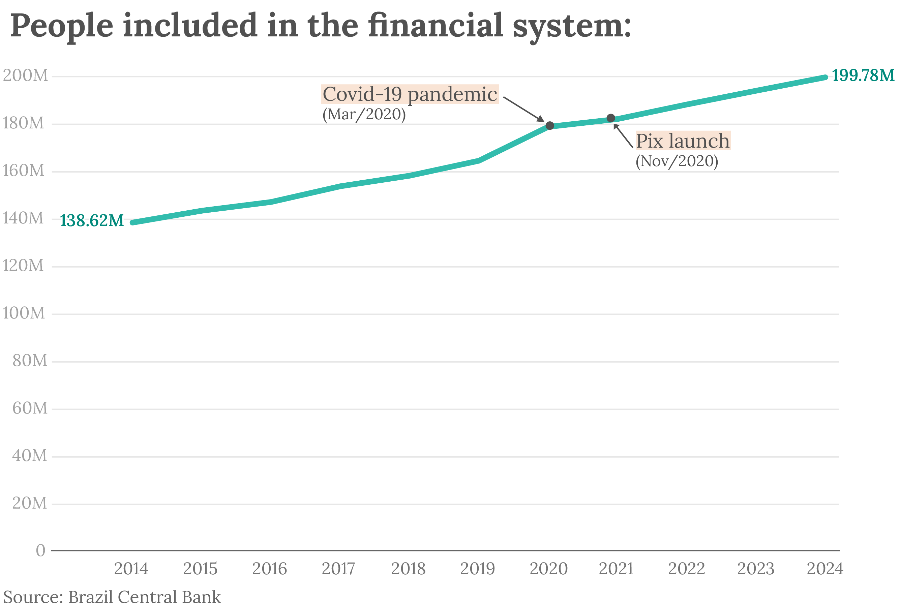
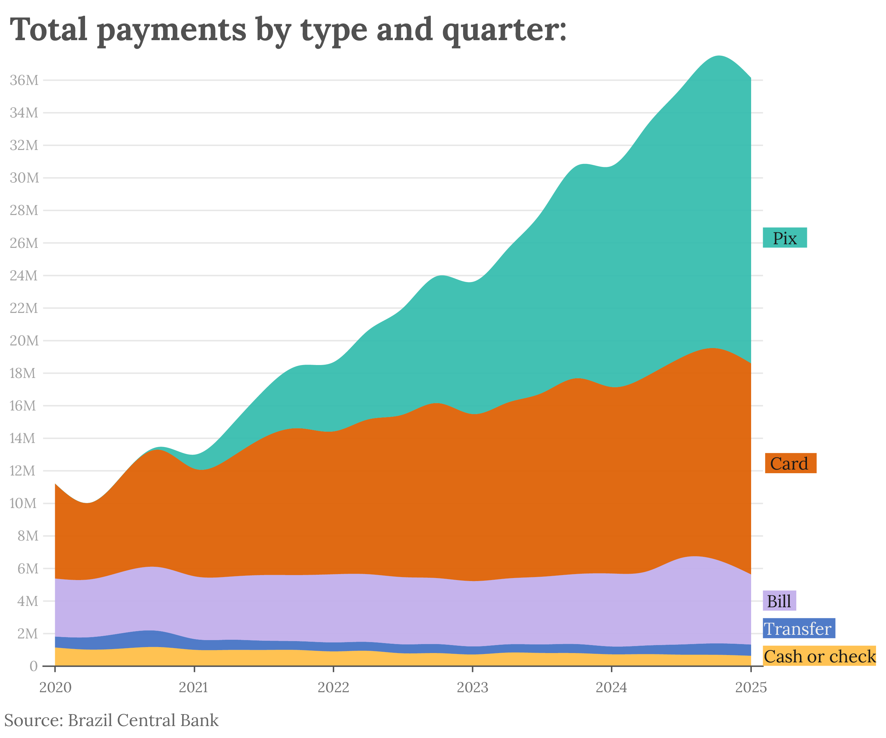
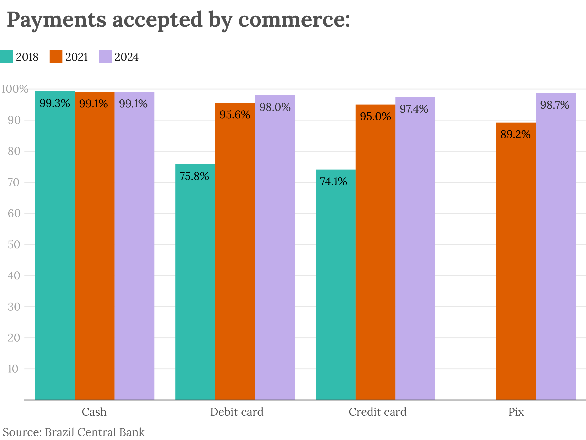
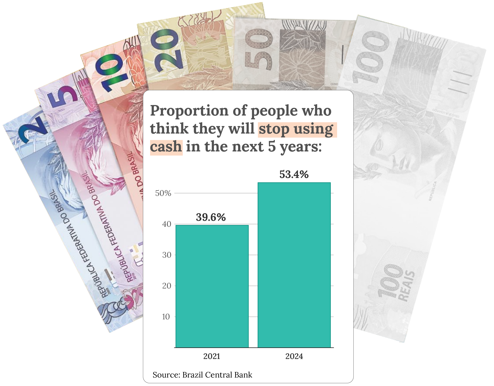

Looking back ten years, the total dropped 28.8%, from 22,701 in June 2016 to 16,165 in June 2025 (the most recent available data). But the trend picked up pace after June 2020.
This phenomenon was more intense among private banks (national or foreign owned): the total number fell 39.3%. In the public sector, there was a 15.9% decrease. The result is that nowadays the public banks account for the majority of agencies (still) out there.
And now even more municipalities in the country have zero bank agencies. Brazil has 5,569 cities and towns. In 2026, almost two thirds of them had at least one physical place offering banking services. That number is now just a little over half:
The Central Bank has made it clear that, although less towns have full bank agencies, most of the others are equipes with what they call "service posts", which are subsidiaries of agencies, usually located inside companies or other institutions.
But physical trips to the bank have become a rare necessity for Brazilians. All thanks to a combo of three phenomena that coincided in the country: digital banks, the pandemic and the three-letter word that has even had the US government on its heels: PIX.
Innovation carnival
Digital banking has been around in Brazil for only ten years. But fintechs found the country ripe for innovations and turned the system on its feet.
In 2016, bank was synomynous to hassle, long lines and a patience test. Not to mention unexplicably high fees. Remember the revolving doors from hell? It was one of the reasons that led Colombian entrepreneur David Vélez to start his own bank in Brazil. Nubank doesn't have revolving doors, or any doors: the service is 100% digital and the bank spent years trying to wow people with good service. It now has over 100 million individual clients in Brazil, Colombia and Mexico.
Besides Nubank, Banco Inter and C6 are other examples of new banks that were born digital. And the old banks were finally forced to catch and offer easier services to keep their clients.
But Brazil, like most emerging economies, still had a large population off the financial system altogether. They are informal workers who used mostly cash transactions and had little incentive to open a bank account. Until the Covid-19 pandemic hit the country and hit the informal market especially hard.
A flood of new clients
The Brazilian Congress acted quickly to try and help the economy during the quarentine. A new program called "Emergency Relief" reached almost 70 million people in 2020.
A huge part of them had to open a bank account for the first time to have access to the monthly payments. According to the Brazil Central Bank, the system gained around 20 million new clients that year.

Most of the newcomers made their debut with digital accounts, which they opened over the phone without leaving their house. And a few months later, as of November of 2020, the Central Bank would rollout a new feature that would soon change how they made payments too.
Pix and patriotism
The first ever official Pix transaction was a US$ 54 payment from PicPay to Banco Inter at 00:04am of November 16th, 2020. It was Brazil's debut in the world of instant payments. These systems allow anyone to transfer money 24/7, making sure the money goes from one bank account to another in mere seconds.
It was an instant hit. The name was catchy and the rules were made by the federal government, which made banks and other financial institutions join the system.
But best of all, it was free for individuals to transfer money to each other. The only tariffs are applied when businesses are involved.
Just like "to venmo", "to make a Pix" became a thing, but an official and free of charge thing. If you need an emergency visit from a plumber, you can "make a Pix" to him when he finishes work. In the streets and crossroads, beggers write their Pix key on cardboards so drivers can copy it and send some cash.
Since Day One, Brazilians have sent a Pix over 150 billion times. They helped Brazil surpass China to take the number 2 spot in the world ranking of instant payments, behind the behemoth India, whose UPI is much older and more developed.
So far, 40% of the adult population had never transferred money before Pix. That's around 70 million people. In the first quarter of the year, 49% of payments made in Brazil were via Pix.

Notice how the total number of payments has increased? That means Pix didn't exactly take over, it helped include more people in the system. But the majority of users choose Pix for their daily transactions, so the mean value of these payments are pretty small.
For larger amounts, they still prefer the TED, an older form of transfer between banks that is also supervised by the BCB, but can take up to 60 minutes. However, in 2025, only five years after coming to life, Pix has surpassed the credit cards in volume of transactions.
That's in part why the US government has announce last week it will launch a probe to investigate if Pix has been used by the Brazilian government in "unfair trade practices" that are harming American companies like Mastercard and Meta, which has its new digital payment system inside WhatsApp.
The Brazilian government denies any wrongdoing and the population has rallied behind president Lula to defend its darling Pix, which has become Brazil's most beloved brand, behind decades old chocolate, perfume and appliances brands. The P in Pix now pretty much stands for Patriotism. A good example is this online campaign started by the federal government:

Are credit cards losing ground to the Pix? No question about it. But surprisingly enough, credit cards have reaped plenty of indirect benefits from the superstar payment system. The bottom line is, Pix has led so many Brazilians to stop carrying cash that businesses who historically refused card payments in protest against the hefty fees were obligated to capitulate.
A recent study by the Central Bank shows how card payments have been tagging along the Pix wave:

At the end of the day, cash withdrawals from banks are the real silent losers in this story. In 2020, when Pix came to life, they accounted for 8% of payments. Nowadays, their share has diminished to a mere 2%.
And over half the people are beginning to envision a future without money bills as early as in the next five years.
